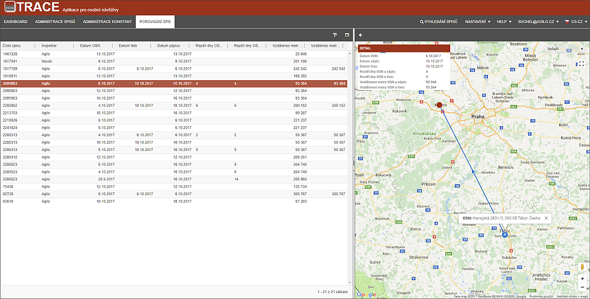
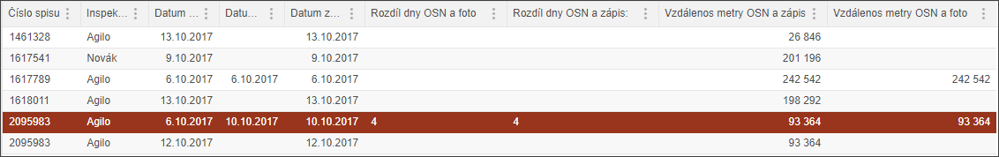
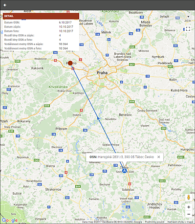
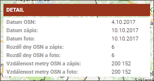

Záložka POROVNÁNÍ GPS
Tato záložka slouží pro kontrolu místa a času zápisu. Na první pohled je možné vidět rozdíl data a místa zápisu.

V seznamu je porovnání:

Informace o rozdílech jsou vykresleny a vypsány i přímo v mapovém podkladě. Pro zobrazení stačí kliknout na vybraný řádek zápisu.
 